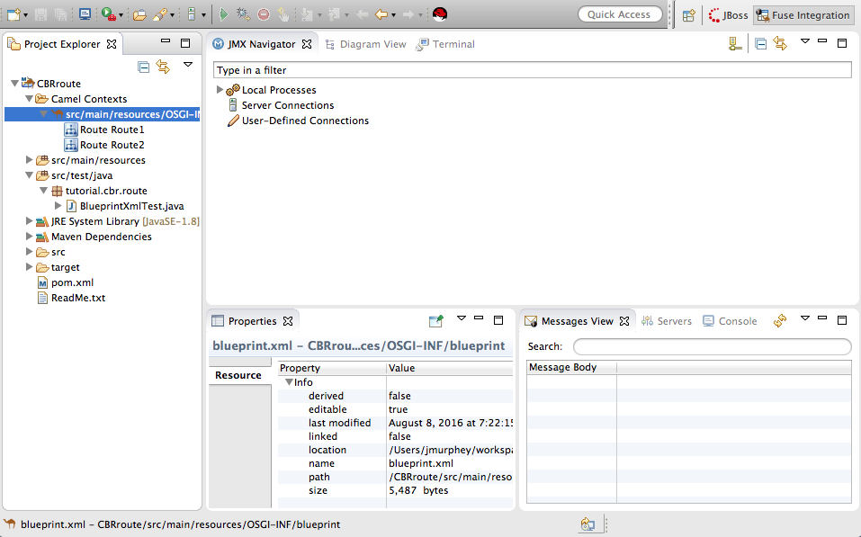
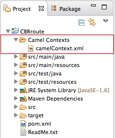
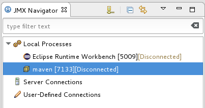
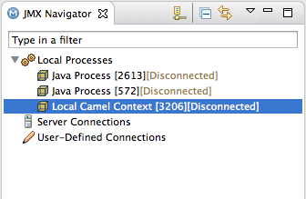
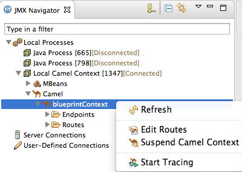

In this tutorial you will:
Run the in the Fuse Integration perspective
Enable tracing on the
Drop messages onto the and track them through all route nodes
To complete this tutorial you will need the project you updated in To Add Another Route to the CBR Routing Context.
![[Note]](imagesdb/note.png) | Note |
|---|---|
If you skipped any tutorial after To Create a New Route, you can use the
prefabricated |
If you are not already working in Fuse Integration perspective:
Click the button on the right side of the tool bar, and then select from the list:

Fuse Integration perspective opens in the default layout:
 Drag the JMX Navigator tab to the far right of the Terminal tab and drop it there:
This arrangement provides more space for Diagram View to display the routing context's nodes graphically, which makes it easier for you to visually trace the path that messages take in traversing the routing context.
Note To make it easy to access a routing context
.xmlfile, especially when a project consists of multiple contexts, the tooling lists them under theCamel Contextsfolder in Project Explorer.Additionally, all routes in a routing context are displayed as icons directly under their context file entry. To display a single route in the routing context on the canvas, double-click its icon in Project Explorer. To display all routes in the routing context, double-click the context file entry.

To start message tracing on the CBRroute project:
In Project Explorer, expand the
CBRrouteproject to exposesrc/main/resources/OSGI-INF/blueprint/blueprint.xml.Right-click
src/main/resources/OSGI-INF/blueprint/blueprint.xmlto open the context menu.Select > .
Note If you select , the tooling reverts to running without tests because you have not yet created a JUnit test for the CBRroute project. You will do that later in To Test a Route with JUnit.
In JMX Navigator, expand Local Processes.
When you first expand Local Processes, you see the node
maven[:Id][Disconnected]When you click this node, it changes to
Local Camel Context[(retaining the sameId][Disconnected]Idas its predecessor):Double click
Local Camel Context[to connect to it, and then expand the elements of your route:Id][Disconnected]Right-click the node to open the context menu, and select :
The tooling displays a graphical representation of your routing context in Diagram View:
To drop messages on the running CBRroute project:
In Project Explorer, expand
CBRroute/src/data, so you can access the message files (message1.xmlthroughmessage6.xml):Drag
message1.xmland drop it on the_context1>Endpoints>file>src/data?noop=truenode in JMX Navigator:As the message traverses the route, the tooling traces and records its passage at each step. To update Diagram View with the new message count, you need to click the
_context1node in JMX Navigator.Note The
Local Camel Context[xxx]tree collapses to the_context1node after you drop the next message on the inputsrc/data?noop=truenode. You need not re-expand it. When dragging the other messages, hover over each node in the tree to expose the next node, until you reach thesrc/data?noop=truenode. Then drop the message on it. This method prevents the tooling from redrawing the graphical representation in Diagram View.
You need to initialize Messages View before it will display message traces. You also need to configure the columns in Messages View if you want them to persist across all message traces.
Switch from Console to Messages View.
Click the
_context1node in JMX Navigator to initialize Messages View withmessage1.xml's details.Note You can control columnar layout in all of the tooling's tables. Use the drag method to temporarily rearrange tabular format. For example, drag a column's border rule to expand or contract its width. To hide a column, totally contract its borders. Drag the column header to relocate a column within the table. For your arrangement to persist, you must use the > method instead.
In Messages View, click the
 icon on the panel's menu bar, and select
to open the
wizard:
icon on the panel's menu bar, and select
to open the
wizard:Note Notice that the message header,
Destination, which you set for the messages in your routing context, appears in the list.You can include or exclude items from Messages View by selecting or deselecting them. You can rearrange the columnar order in which items appear in Messages View by highlighting individual, selected items and moving them up or down in the list.
In the Configure Columns wizard, select and order the columns this way:
These columns and their order will persist in Messages View until you change them again.
To see all message flow paths clearly, you'll probably need to rearrange the nodes by dragging them to fit neatly in Diagram View. You may also need to adjust the size of the other views and tabs in Red Hat JBoss Developer Studio to allow Diagram View to expand.
To step through the message traces:
In Messages View, click the
 (Refresh button) on top, right of the panel's menu bar to
populate the view with
(Refresh button) on top, right of the panel's menu bar to
populate the view with message1.xml's message traces.Each time you drop a message on the input
srcnode in JMX Navigator, you need to refresh Messages View to populate it with the message traces.Click one of the message traces to see more details about it in Properties view:
The tooling displays the details about a message trace (including message headers when they are set) in the top half of the Properties panel and the contents of the message instance in the bottom half of the Properties panel. So, if your application sets headers at any step within a route, you can check the Message Details to see whether they were set as expected.
You can step through the message instances by highlighting each one to see how a particular message traversed the route and whether it was processed as expected at each step in the route.
In Diagram View, the associated step in the route is highlighted:
Drag
message2.xmland drop it on the_context1>Endpoints>file>src/data?noop=truenode in JMX Navigator.Hover over each node in the tree until you expose the
src/data?noop=truenode, then dropmessage2.xmlon it.Switch from Console to Messages View.
In Messages View, click the
(Refresh button) on top, right of the panel's menu bar to
populate the view with message2.xml's message traces.Note You can repeat Step 2 through Step 2 for the remaining messages in
CBRroute/src/data/at any time, as long as tracing remains enabled.On each subsequent drop, remember to click the
(Refresh button) on the panel's menu bar to populate
Messages View with the new message traces.The tooling draws the route in Diagram View, tagging paths exiting a processing step with timing and performance metrics (in milliseconds). Only the metric Total exchanges is displayed in the diagram:
Hovering over the displayed metrics reveals additional metrics about message flow:
Mean time the step took to process a message
Maximum time the step took to process a message
Minimum time the step took to process a message
When done:
In JMX Navigator, right-click and select from the context menu.
Open the Console and click the button in the upper right of the panel to stop the Console. Then click the
 button to clear console output.
button to clear console output.
After you create a JUnit test case for your project, you can run your project as a , instead of . (See To Test a Route with JUnit for details.